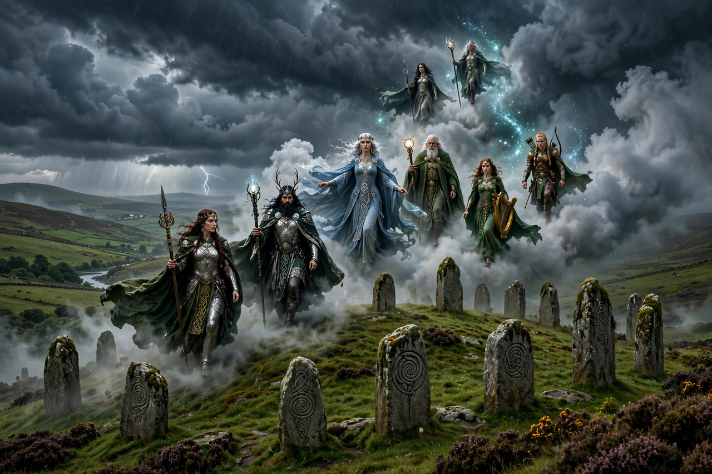

| Tuatha Dé Danann | |
|---|---|
 The arrival of the Tuatha Dé Danann in Ireland | |
| Meaning | "Tribes of the goddess Danu" / "People of the goddess Danu" |
| Tradition | Irish mythology; Mythological Cycle |
| Principal sources | Lebor Gabála Érenn, Cath Maige Tuired |
| Fate | Withdrew into the sídhe mounds as the Aos Sí |
The Tuatha Dé Danann (Old Irish: "the peoples of the goddess Danu"), also known by the earlier name Tuath Dé ("tribe of the gods" or "divine tribe"), are a supernatural race in Irish mythology. In the earliest traditions, they are the principal gods of pre-Christian Gaelic Ireland, depicted as kings, queens, bards, heroes, healers and craftsmen who dwell in the Otherworld. Many of the Irish tales of the Tuatha Dé Danann refer to these beings as deities, though in later Christian redactions they were re-cast as mortal invaders or fallen angels.
According to the pseudo-historical Lebor Gabála Érenn (Book of Invasions), the Tuatha Dé Danann were the fifth group to settle Ireland, arriving in dark clouds from the north, bringing four magical treasures: the Stone of Fál, the Spear of Lugh, the Sword of Nuada and the Cauldron of the Dagda. They defeated the Fir Bolg at the First Battle of Mag Tuired, and the monstrous Fomorians at the Second Battle of Mag Tuired, where the champion Lugh slew Balor of the Evil Eye. Their leading figures include the Dagda, Nuada of the Silver Hand, Lugh, the Morrígan, Brigid, Ogma, Manannán mac Lir and Dian Cécht.
When the Milesians — the ancestors of the Gaels — invaded, the Tuatha Dé Danann were defeated at Tailtiu and, by the bargain struck with the poet Amergin, withdrew underground into the sídhe (fairy mounds), becoming the Aos Sí of later folklore. In this diminished but enduring form they remained central to Irish folk belief for centuries.